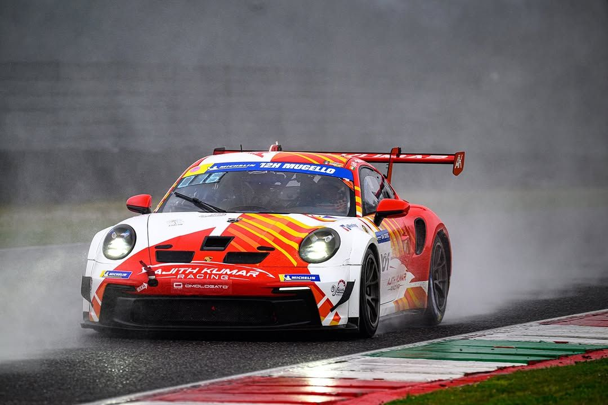

Crimson GT
Sunset performance on an open highway
A low-slung red grand tourer captured in golden hour light, highlighting its sculpted body lines and sharp LED headlamps as it cruises along the coastal road.

Explore a collection of stunning sports cars, captured against warm sunset skies with our Shankar Transport logo proudly displayed as part of the visual theme.

Sunset performance on an open highway
A low-slung red grand tourer captured in golden hour light, highlighting its sculpted body lines and sharp LED headlamps as it cruises along the coastal road.

City lights meeting the last rays of sun
A bright yellow coupe positioned near the waterfront, with a warm orange-pink sky behind it and reflections of city lights bouncing off its glossy paintwork.

Twisting mountain roads and dramatic skies
A deep blue sports car cornering along a mountain pass, with layered sunset clouds painting the background in shades of purple and orange.

Open-top freedom by the sea
A white roadster parked near the shoreline, its curves mirrored in the wet sand while the sun sets over the horizon, casting long reflections across the beach.